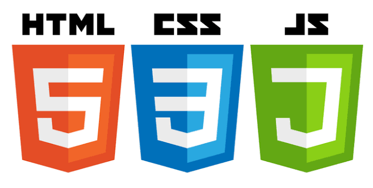

¡Bienvenido a mi portafolio personal! Mi nombre es [ivor junior bird] y soy una persona interesada en el mundo de la programación y el desarrollo web. Este espacio tiene como objetivo presentar mis conocimientos, habilidades, proyectos y aprendizajes en el área de la tecnología. Me estoy formando en el desarrollo web utilizando diferentes lenguajes y herramientas que permiten crear páginas modernas, atractivas y funcionales.
Hola! Mi nombre es ivor junir. Soy una persona apasionada por la tecnología, la informática y la programación. Me interesa aprender constantemente nuevas herramientas y desarrollar habilidades que me permitan crear soluciones digitales. Tengo conocimientos en desarrollo web, especialmente en HTML y CSS, y continúo ampliando mis conocimientos en diferentes lenguajes y tecnologías de programación. Me considero una persona responsable, creativa, dedicada y con muchas ganas de seguir creciendo profesionalmente. Mi objetivo es adquirir experiencia, mejorar mis habilidades y participar en proyectos tecnológicos.
Mi objetivo es convertirme en un desarrollador de software capacitado, capaz de diseñar, desarrollar y mantener páginas web y aplicaciones. Busco seguir aprendiendo nuevas tecnologías, fortalecer mis conocimientos de programación y adquirir experiencia mediante proyectos que me permitan demostrar mis capacidades.
HTML: Conozco la estructura básica de HTML y su utilización para crear páginas web, organizar contenidos, agregar imágenes, enlaces, formularios y diferentes elementos.
CSS: Tengo conocimientos sobre CSS para diseñar y personalizar páginas web, aplicar colores, modificar tamaños, organizar elementos y mejorar la apariencia de los sitios.
JavaScript: Estoy desarrollando conocimientos sobre JavaScript, un lenguaje que permite agregar interactividad y funciones dinámicas a las páginas web.
Diseño web: Comprendo los principios básicos para crear páginas organizadas, atractivas y adaptables a diferentes dispositivos.
Bases de datos: Tengo interés y conocimientos en el área de almacenamiento, organización y administración de información.
la creacion del juego fue junto a mi compañero como la pagina principal no dio un poco de problema porque nunca habiamos trabajado junto pero pudimos resolver
En conclusión, realizar una página web utilizando HTML, CSS y JavaScript fue una experiencia muy importante para mi aprendizaje, ya que me permitió conocer cómo se construye y funciona una página web desde cero. A través de HTML aprendí a organizar la información y crear la estructura de la página, con CSS pude mejorar su apariencia, agregar colores, estilos y diseños, y mediante JavaScript comprendí cómo añadir funciones e interactividad para que la página sea más dinámica y atractiva para los usuarios.
Durante este proceso pude poner en práctica mis conocimientos de programación, desarrollar mi creatividad y aprender a resolver diferentes dificultades que se presentaron al momento de crear la página. También entendí que cada uno de estos lenguajes cumple una función importante y que, al trabajar juntos, permiten crear sitios web más completos, modernos y funcionales.
Esta actividad me ayudó a fortalecer mis habilidades como estudiante y como futuro programador. Además, me motivó a seguir investigando y aprendiendo nuevas herramientas y tecnologías relacionadas con el desarrollo web. Considero que este proyecto es un paso importante en mi formación, porque me demuestra que, con esfuerzo, dedicación y práctica, puedo crear mis propias páginas web y continuar avanzando en el mundo de la programación.